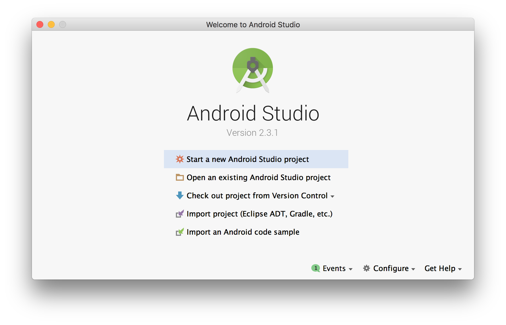
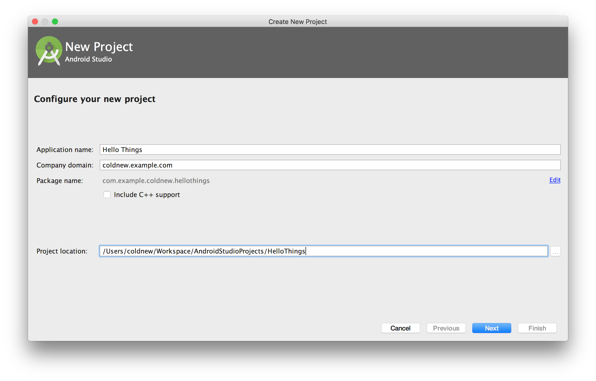
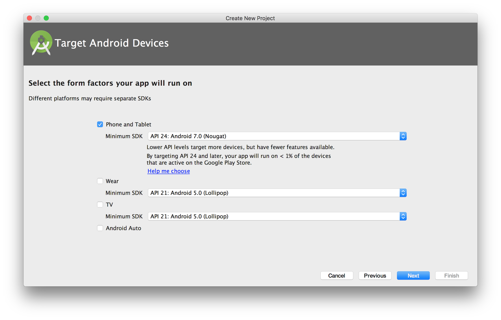
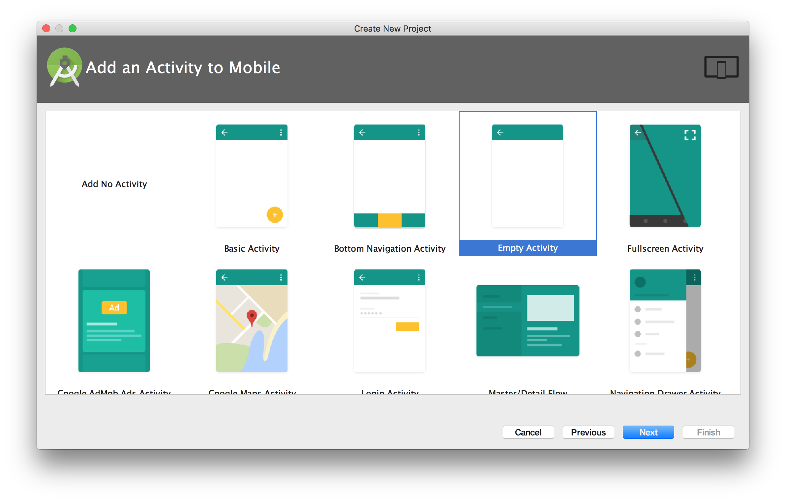
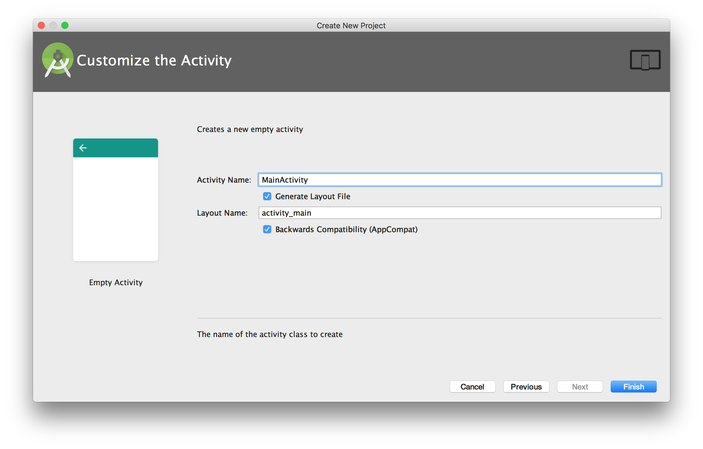
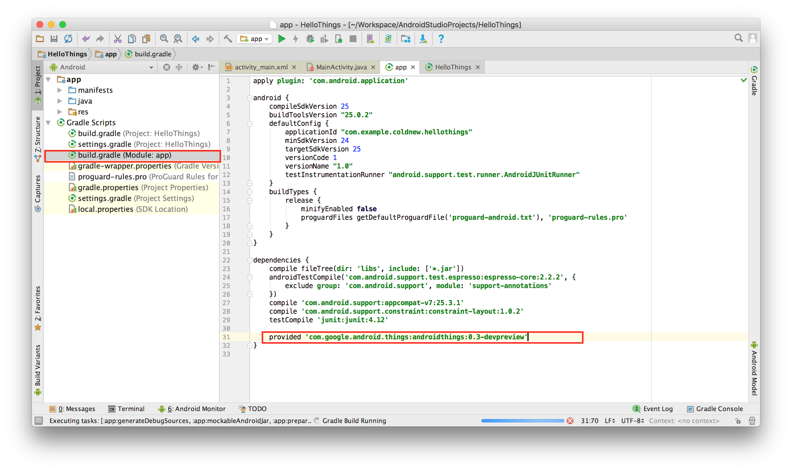
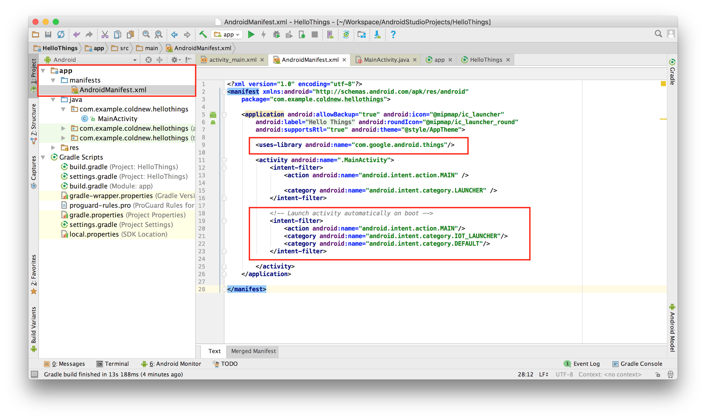
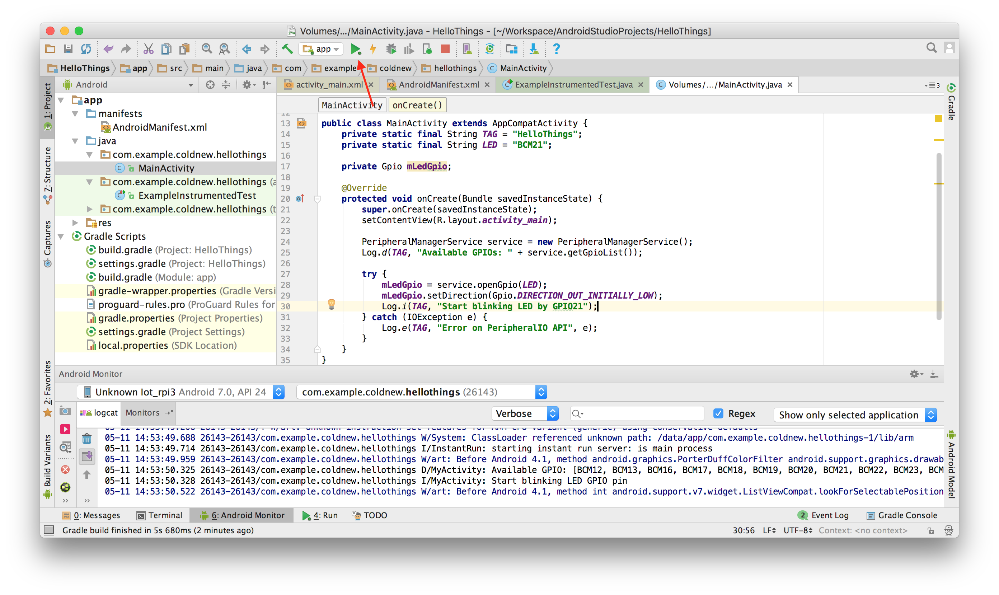
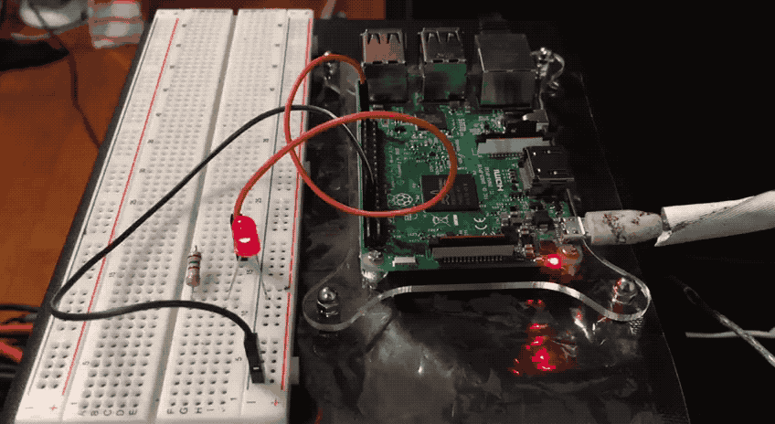

在 Android Things 學習筆記: Raspberry Pi 3 安裝 OS 一文中我們搞定了 Android Things 在 Raspberry Pi 3 上的安裝，終於可以開始來寫我們的程式了。
這邊文章讓我們來小試身手，透過 GPIO 的輸出來控制外接於 Raspberry Pi 3 上的 LED 燈。
使用設備
要完成本篇文章所描述的部份，你需要以下幾種器材
- Raspberry Pi 3
- LED (紅)
- 電阻 (150 Ω, 1/4W)
- 麵包板
- 單蕊線或跳線
硬體線路
建立專案
由於這是我們的第一個專案，就不透過 androidthings/new-project-template 這個範例樣板來建立我們的專案，讓我們透過 Android Studio 來一步一步開始吧。
不過建立新專案之前，記得先透過 adb 連上你的 Raspberry Pi 3
coldnew@osx ~ $ adb connect Android.local
首先先打開 Android Studio

接下來命名我們的專案叫做 Hello Things

在選擇 Minimum SDK 的時候，記得要選擇 API 24 或是以上的版本

選擇 Empty Activity

好了後，按下 Finish 即可

修改專案
build.gradle
建立好專案後，我們首先要修改 build.gradle 並加入 Android Things 的依賴
dependencies { // ... provided 'com.google.android.things:androidthings:0.3-devpreview' }
如果你不知道要放在哪裡，請參考下圖

AndroidManifest.xml
接下來在你的 AndroidManifest.xml 加入以下東西，我們要讓這個程式可以一開機就啟動
--- a/AndroidManifest.xml 2017-05-11 22:13:00.000000000 +0800 +++ b/AndroidManifest.xml 2017-05-11 22:13:34.000000000 +0800 @@ -5,6 +5,9 @@ <application android:allowBackup="true" android:icon="@mipmap/ic_launcher" android:label="@string/app_name" android:roundIcon="@mipmap/ic_launcher_round" android:supportsRtl="true" android:theme="@style/AppTheme"> + + <uses-library android:name="com.google.android.things"/> + <activity android:name=".MainActivity"> <intent-filter> <action android:name="android.intent.action.MAIN" /> @@ -12,6 +15,14 @@ <category android:name="android.intent.category.LAUNCHER" /> </intent-filter> </activity> + + <!-- Launch activity automatically on boot --> + <intent-filter> + <action android:name="android.intent.action.MAIN"/> + <category android:name="android.intent.category.IOT_LAUNCHER"/> + <category android:name="android.intent.category.DEFAULT"/> + </intent-filter> + </application> </manifest>
如果你不知道要放在哪裡，請參考下圖

點亮 LED 燈
是時候來撰寫我們的程式了，讓我們來打開 hellothings/MainActivity.java 檔案吧!!
首先回顧前面的定義，我們希望可以控制 GPIO21 來點亮 LED 燈，因此首先在 MainActivity 這個 class 加入我們的一些設定
private static final String TAG = "HelloThings"; private static final String LED = "BCM21"; private Gpio mLedGpio; // com.google.android.things.pio.Gpio;
接下來將 onCreate 修改成以下，我們讓他打開 GPIO21 並將其設定成 輸出為 1 的接腳
@Override protected void onCreate(Bundle savedInstanceState) { super.onCreate(savedInstanceState); setContentView(R.layout.activity_main); // com.google.android.things.pio.PeripheralManagerService; PeripheralManagerService service = new PeripheralManagerService(); Log.d(TAG, "Available GPIOs: " + service.getGpioList()); // android.util.Log; try { mLedGpio = service.openGpio(LED); mLedGpio.setDirection(Gpio.DIRECTION_OUT_INITIALLY_LOW); mLedGpio.setValue(true); Log.i(TAG, "Start blinking LED by GPIO21"); } catch (IOException e) { Log.e(TAG, "Error on PeripheralIO API", e); } }
由於我們在 onCreate 時打開了 GPIO21 ，因此要記得在 onDestroy 將他關閉
@Override protected void onDestroy() { super.onDestroy(); Log.i(TAG, "Closing LED GPIO21 pin"); try { mLedGpio.close(); } catch (IOException e) { Log.e(TAG, "Error on PeripheralIO API", e); } finally { mLedGpio = null; } }
嘗試執行當前的程式看看，你應該會看到你接在麵包板的 LED 亮了起來，接下來讓我們修改一下程式，讓他變成閃爍燈吧~

閃爍吧 LED
成功點亮 LED 後，我們接下來要讓他進行閃爍囉。
延續上面的專案，首先在 MainActivity 這個 class 加入我們要閃爍多久，以及 Handler 的宣告
private static final int INTERVAL_BETWEEN_BLINKS_MS = 1000; private Handler mHandler = new Handler(); // android.os.Handler
接著在剛剛設定 GPIO 輸出值的後面，設定我們的 Handler 函式
try { mLedGpio = service.openGpio(LED); mLedGpio.setDirection(Gpio.DIRECTION_OUT_INITIALLY_LOW); mLedGpio.setValue(true); Log.i(TAG, "Start blinking LED by GPIO21"); mHandler.post(mBlinkRunnable); // <------ Add this } catch (IOException e) { Log.e(TAG, "Error on PeripheralIO API", e); }
並在後面完成我們的 mBlinkRunnable 實作
private Runnable mBlinkRunnable = new Runnable() { @Override public void run() { if (mLedGpio == null) { return; } try { mLedGpio.setValue(!mLedGpio.getValue()); // Toggle the GPIO state Log.d(TAG, "GPIO21 set to " + mLedGpio.getValue()); mHandler.postDelayed(mBlinkRunnable, INTERVAL_BETWEEN_BLINKS_MS); } catch (IOException e) { Log.e(TAG, "Error on PeripheralIO API", e); } } };
在這邊，我們透過了 java.lang.Runnable 去建立我們的執行緒，而在裡面則透過取得當前的 GPIO 數值將其反向，從而另 LED 閃爍。如果你想要閃爍快一點，可以修改前面宣告的 INTERVAL_BETWEEN_BLINKS_MS 變數。
由於我們使用了 android.os.Handler ，記得要在 onDestroy 時候幹掉他
@Override protected void onDestroy() { super.onDestroy(); mHandler.removeCallbacks(mBlinkRunnable); // <---- Add this Log.i(TAG, "Closing LED GPIO21 pin"); try { mLedGpio.close(); } catch (IOException e) { Log.e(TAG, "Error on PeripheralIO API", e); } finally { mLedGpio = null; } }
結果
如果你有照著本文接線並執行程式的話，你應該會得到以下這樣的結果 ~

取得程式碼
本文的範例已經放置於 GitHub 上，你可以直接透過 git 去取得完整專案原始碼